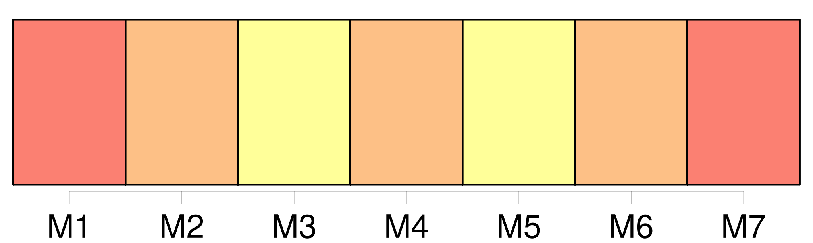
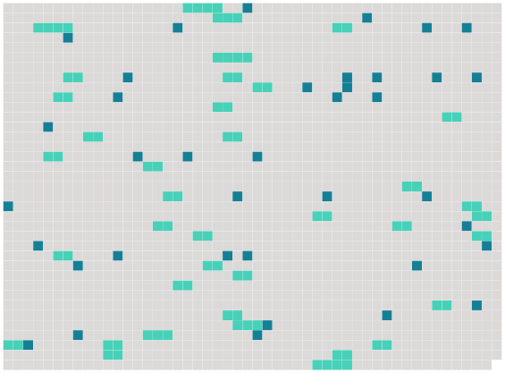

Longueur nb maillons : 76 mentions |
 |
S'il y a nécessité de pourvoir à l'administration de tout ou partie des biens laissés par [une personne présumée absente] , et [qui] n'a point de procureur fondé, il y sera statué par le tribunal de première instance, sur la demande des parties intéressées. [1 phrases]
Le tribunal, à la requête de la partie la plus diligente, commettra un notaire pour représenter [les présumés absens] , dans les inventaires, comptes, partages et liquidations dans lesquels [ils] seront intéressés. [1 phrases]
Le ministère public est spécialement chargé de veiller aux intérêts [des personnes présumées absentes] ; et il sera entendu sur toutes les demandes qui [les] concernent. [3 phrases]
Lorsqu' [une personne] aura cessé de paraître au lieu de [son] domicile ou de [sa] résidence, et que depuis quatre ans on n' [en] aura point eu de nouvelles, les parties intéressées pourront se pourvoir devant le tribunal de première instance, afin que l'absence soit déclarée. [3 phrases]
Le tribunal en statuant sur la demande, aura d'ailleurs égard aux motifs de l'absence, et aux causes qui ont pu empêcher d'avoir des nouvelles de [l'individu présumé absent] [6 phrases]
Section Ire [1 phrases]
Dans les cas où [l'absent] n'aurait point laissé de procuration pour l'administration de [ses] biens, [ses] héritiers présomptifs au jour de [sa] disparition ou de [ses] dernières nouvelles, pourront, en vertu du jugement définitif qui aura déclaré l'absence, se faire envoyer en possession provisoire des biens qui appartenaient à [l'absent] au jour de [son] départ ou de [ses] dernières nouvelles, à la charge de donner caution pour la sûreté de leur administration. [1 phrases]
Si [l'absent] a laissé une procuration [ses] héritiers présomptifs ne pourront poursuivre la déclaration d'absence et l'envoi en possession provisoire qu'après dix années révolues depuis [sa] disparition ou depuis [ses] dernières nouvelles. [1 phrases]
Il en sera de même si la procuration vient à cesser ; et, dans ce cas, il sera pourvu à l'administration des biens de [l'absent] , comme il est dit au chapitre Ier du présent titre. [1 phrases]
Lorsque les héritiers présomptifs auront obtenu l'envoi en possession provisoire, le testament, s'il en existe un, sera ouvert à la réquisition des parties intéressées, ou du commissaire du Gouvernement près le tribunal ; et les légataires, les donataires, ainsi que tous ceux qui avaient sur les biens de [l'absent] , des droits subordonnés à la condition de [son] décès, pourront les exercer provisoirement, à la charge de donner caution. [1 phrases] L'époux commun en biens, s'il opte pour la continuation de la communauté, pourra empêcher l'envoi provisoire et l'exercice provisoire de tous les droits subordonnés à la condition du décès de [l'absent] , et prendre ou conserver par préférence l'administration des biens de [l'absent] [3 phrases]
La possession provisoire ne sera qu'un dépôt, qui donnera à ceux qui l'obtiendront l'administration des biens de [l'absent] , et qui les rendra comptables envers [lui] , en cas qu' [il] reparaisse ou qu'on ait de [ses] nouvelles. [1 phrases]
Ceux qui auront obtenu l'envoi provisoire, ou l'époux qui aura opté pour la continuation de la communauté, devront faire procéder à l'inventaire du mobilier et des titres de [l'absent] , en présence du commissaire du Gouvernement près le tribunal de première instance, ou d'un juge de paix requis par ledit commissaire. [3 phrases]
Son rapport sera homologué en présence du commissaire du Gouvernement ; les frais en seront pris sur les biens de [l'absent] [1 phrases]
Ceux qui par suite de l'envoi provisoire, ou de l'administration légale, auront joui des biens de [l'absent] , ne seront tenus de [lui] rendre que le cinquième des revenus, s' [il] reparaît avant quinze ans révolus depuis le jour de [sa] disparition ; et le dixième, s' [il] ne reparaît qu'après les quinze ans. [2 phrases]
Tous ceux qui ne jouiront qu'en vertu de l'envoi provisoire, ne pourront aliéner ni hypothéquer les immeubles de [l'absent] [1 phrases]
Si l'absence a continué pendant trente ans depuis l'envoi provisoire, ou depuis l'époque à laquelle l'époux commun aura pris l'administration des biens de [l'absent] , ou s'il s'est écoulé cent ans révolus depuis la naissance de [l'absent] , les cautions seront déchargées ; tous les ayant-droit pourront demander le partage des biens de [l'absent] , et faire prononcer l'envoi en possession définitif par le tribunal de première instance. [1 phrases]
La succession de [l'absent] sera ouverte du jour de [son] décès prouvé, au profit des héritiers les plus proches à cette époque ; et ceux qui auraient joui des biens de [l'absent] , seront tenus de les restituer, sous la réserve des fruits par eux acquis en vertu de l'article 127. [1 phrases]
Si [l'absent] reparaît ; ou si [son] existence est prouvée pendant l'envoi provisoire, les effets du jugement qui aura déclaré l'absence, cesseront ; sans préjudice, s'il y a lieu, des mesures conservatoires prescrites au chapitre Ier du présent titre, pour l'administration de [ses] biens. [1 phrases]
Si [l'absent] reparaît, ou si [son] existence est prouvée, même après l'envoi définitif, [il] recouvrera [ses] biens dans l'état où ils se trouveront, le prix de ceux qui auraient été aliénés, ou les biens provenant de l'emploi qui aurait été fait du prix de [ses] biens vendus. [1 phrases]
Les enfans et descendans directs de [l'absent] pourront également, dans les trente ans, à compter de l'envoi définitif, demander la restitution de [ses] biens, comme il est dit en l'article précédent. [1 phrases]
Après le jugement de déclaration d'absence, toute personne qui aurait des droits à exercer contre [l'absent] , ne pourra les poursuivre que contre ceux qui auront été envoyés en possession des biens, ou qui en auront l'administration légale. [1 phrases]
Des effets de l'Absence, relativement aux Droits éventuels qui peuvent compléter à [l'absent] [5 phrases]
Les dispositions des deux articles précédens auront lieu sans préjudice des actions en pétition d'hérédité et d'autres droits, lesquels compéteront à [l'absent] ou à [ses] représentans ou ayant-cause, et ne s'éteindront que par le laps de temps établi pour la prescription. [1 phrases]
Tant que [l'absent] ne se représentera pas, ou que les actions ne seront point exercées de [son] chef, ceux qui auront recueilli la succession gagneront les fruits par eux perçus de bonne foi. [3 phrases]
[L'époux absent] [dont] le conjoint a contracté une nouvelle union, sera seul recevable à attaquer ce mariage par lui-même, ou par son fondé de pouvoir, muni de la preuve de [son] existence. [1 phrases]
Si [l'époux absent] n'a point laissé de parens habiles à [lui] succéder, l'autre époux pourra demander l'envoi en possession provisoire des biens. [1 phrases]
De la surveillance des enfans mineurs [du père] [qui] a disparu. [1 phrases]
Si [le père] a disparu laissant des enfans mineurs issus d'un commun mariage, la mère en aura la surveillance, et elle exercera tous les droits [du mari] , quant à leur éducation et à l'administration de leurs biens. [1 phrases]
Six mois après la disparition [du père] , si la mère était décédée lors de cette disparition, ou si elle vient à décéder avant que l'absence [du père] ait été déclarée, la surveillance des enfans sera déférée, par le conseil de famille, aux ascendans les plus proches, et, à leur défaut, à un tuteur provisoire,
Il en sera de même dans le cas où [l'un des époux] qui aura disparu, laissera des enfans mineurs issus d'un mariage précédent. |
 |
Il est possible de télécharger la ressource sur la page Ortolang |
Si vous avez des questions ou vous voyez des erreurs, merci d'envoyer un mail à silvia.federzoni89@gmail.com |